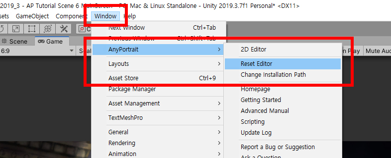
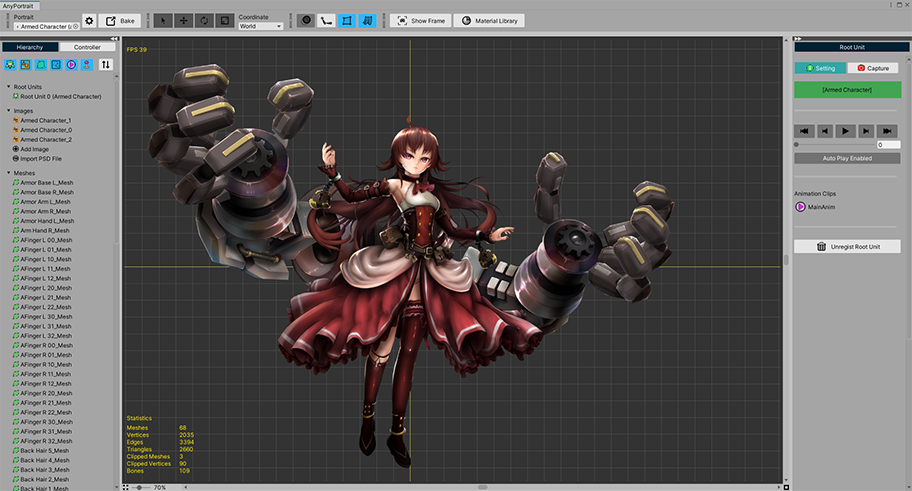
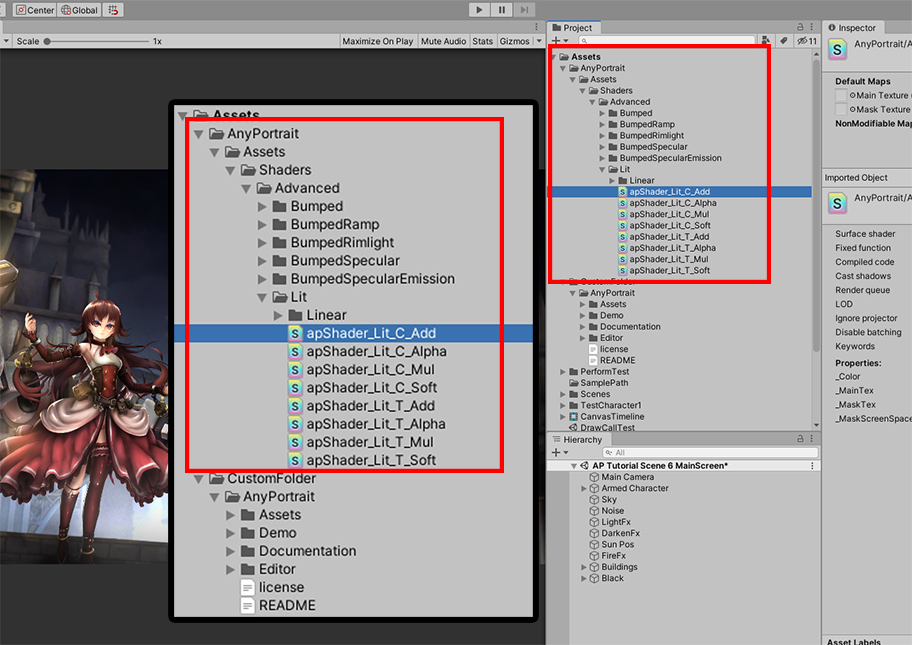
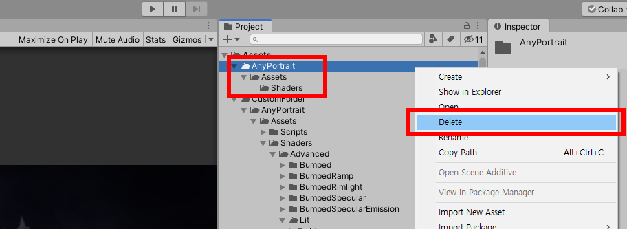
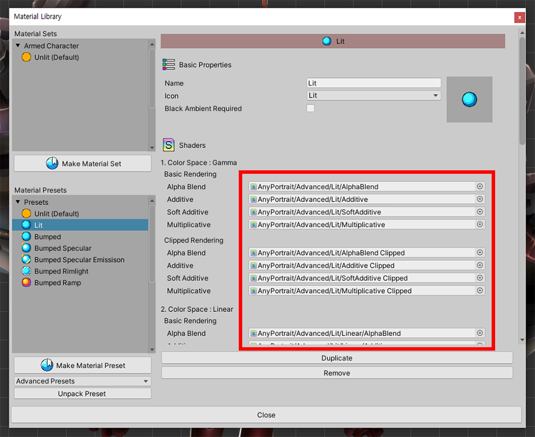

AnyPortrait > マニュアル > パッケージのパスを変更
パッケージのパスを変更
1.2.3
AnyPortraitパッケージをインストールすると、パッケージのファイルは、「Assets/AnyPortrait」とその下位のパスにインストールされます。
AnyPortraitエディタは、多くのリソースを使用しており、パッケージがインストールされてパスからロードをします。
ユーザーによっては、コラボレーションのためにAnyPortraitがインストールされてパスを他の場所に移す必要があります。
しかし、AnyPortraitがインストールされてフォルダを別のパスに移動させると、エディタは開きません。
このページでは、AnyPortraitパッケージのパスを変更する方法を説明します。

AnyPortraitをインストールすると、上記のように、 「Assets/AnyPortrait」にすべてのファイルがあります。
AnyPortraitフォルダを別の場所に移動させてみましょう。

ここで「CustomFolder」という新しいフォルダを作成し、AnyPortraitフォルダをそのサブフォルダに移動させてみました。

エディタを実行してみると、エディタは開かれず、上記のような警告メッセージが表示されます。
上記のメッセージは、パッケージの内容が壊れているか、パスが変わったことを通知します。

変わったパスを入力してAnyPortraitエディタが実行されるようにしましょう。
ユニティエディタに戻り、「Window > AnyPortrait > Change Installation Path」を選択します。

AnyPortraitパッケージのパスを設定するダイアログが表示されます。
(1) 「Change Pathボタン」を押します。
(2) 「変更された位置のAnyPortraitフォルダ」を選択します。
注意
フォルダの名前を変更するとはならず、Assetsフォルダの外に位置してもいけません。
AnyPortraitフォルダ内のリソースのパスを変更することも問題を引き起こすことができます。

上記のように変更されたパスと同じように、パッケージのインストールパスの設定が変更されました。
もしデフォルトに戻すには、「Use Default Pathボタン」を押します。

エディタを開く前に、エディタが無効なパスからリソースを継続ロードしようとすることができますので、リセットする必要があります。
「Window > AnyPortrait > Reset Editor」を実行します。

AnyPortraitエディタが正常に実行されます。
変更されたパスに「マテリアルプリセット」をインストール
AnyPortraitのほとんどのリソースは、設定に応じて変更されたパスからロードになります。
しかし、例外が一つあります。
「マテリアルライブラリ」（関連ページ）の「マテリアルプリセット」は、デフォルトのパスにインストールされるからです。
この場合には次の方法で問題を解決してください。

マテリアルライブラリを開いてマテリアルプリセットを設置しましょう。
「Material Libraryボタン」を押して「マテリアルライブラリ」を開きます。

(1) 「マテリアルプリセット」を選択し、「Unpack Presetボタン」を押してインストールします。
(2) インストールが完了したら、「マテリアルライブラリ」を再起動するようにメッセージが表示されます。 Okayボタンを押して、 "マテリアルライブラリ」を開きます。

(1) インストールされて「マテリアルプリセット」のいずれかを選択します。
(2) プリセットの「Shader Asset」が認識されないことを見ることができます。
ユーザーがマテリアルセット（Material Set）を作成した場合、Shaderは認識がされるが、プリセットは静的ルートを利用するので、ここで認識されません。

Unityエディタに戻って、「プリセットがインストールされてフォルダ」をご確認しましょう。
「マテリアルプリセット」は、変更されたパスではなく、「元のパス（Assets/AnyPortrait）」にインストールされます。
このファイルを「変更されたパッケージのパス」に合わせて移動させなければします。

マテリアルプリセットは「Assets/AnyPortrait/Assets/Shaders」の下位にプリセット名と同様のフォルダが作成され、インストールされます。
もし「Advanced Presets」をインストールした場合、移動させるべきフォルダの名前は「Advanced」です。
このフォルダを「Assets/〜（変更されたルートフォルダ）/AnyPortrait/Assets/Shaders」に移動します。

ファイルを移動させると、不必要なフォルダが残ります。
このフォルダを削除します。

マテリアルプリセットのShader Assetが正常にロードされていることを見ることができます。